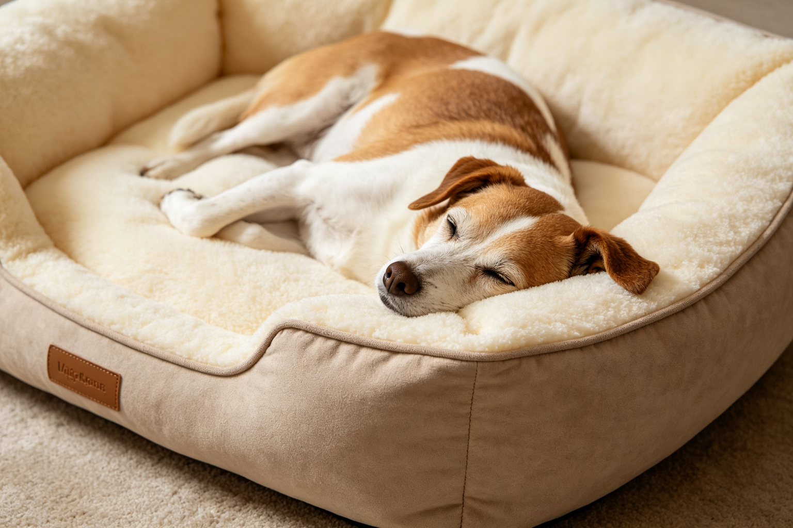
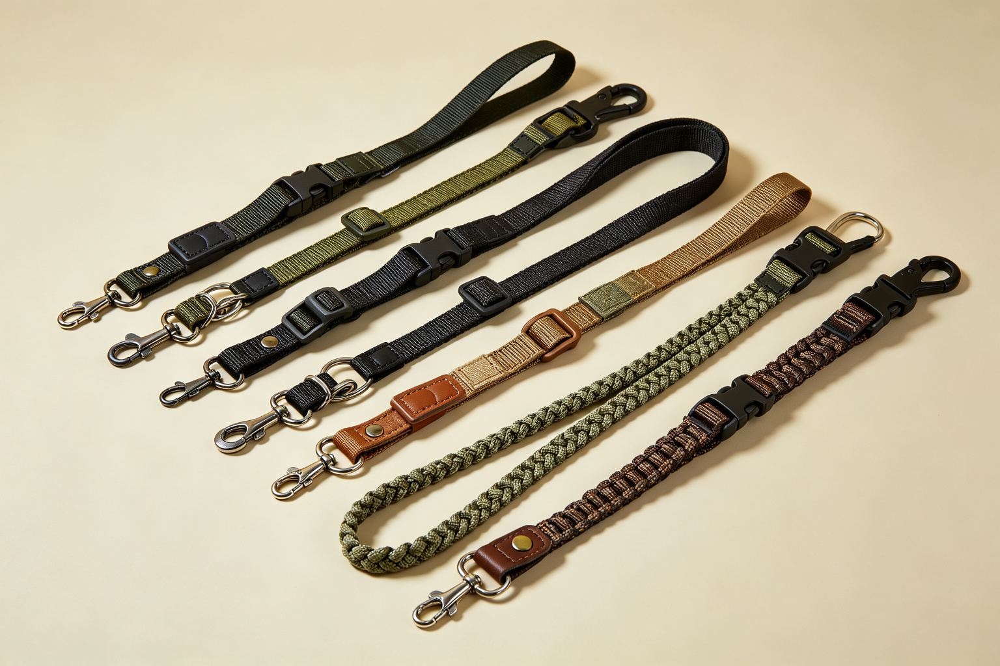
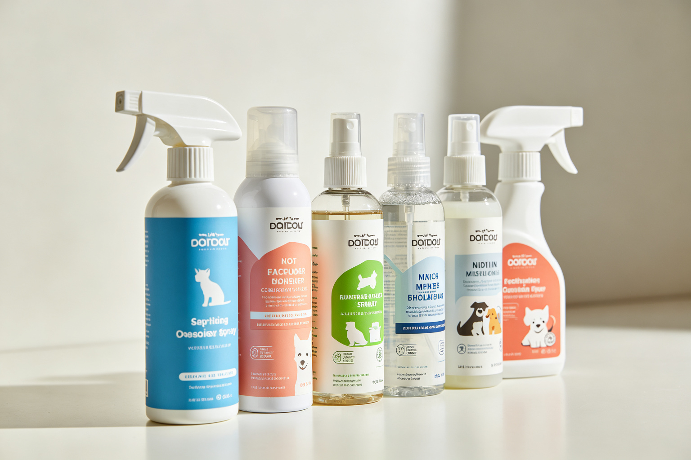
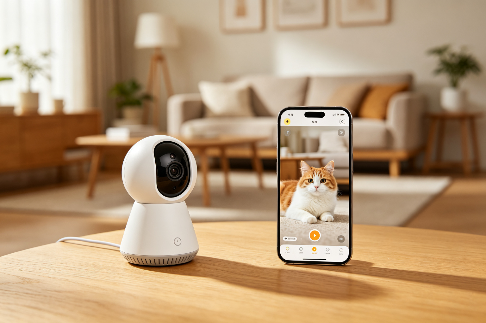

貓砂除臭機制：活性炭、沸石與酵素比較
貓砂除臭不是靠香味覆蓋——真正的除臭涉及吸附、化學分解、微生物抑制等不同機制。活性炭靠多孔結構吸附臭味分子、沸石靠離子交換捕捉氨氣、酵素靠生物分解有機物、銀離子...

寵物洗毛精成分解讀：SLS與防腐劑
寵物洗毛精的成分表常常佈滿化學名詞——SLS/SLES是清潔劑、Paraben是防腐劑、香精可能引起過敏。不是所有化學成分都有害，但有些的確可能刺激寵物皮膚或引...

寵物玩具材質安全：乳膠、橡膠與尼龍
寵物玩具的材質直接影響安全性——廉價塑膠可能含有害塑化劑、乳膠可能引起過敏、尼龍碎片被吞下可能造成腸道阻塞。從常見玩具材質的特性比較、耐咬度測試、毒性與安全性、...

寵物電子用品電磁輻射與安全性
越來越多寵物電子用品進入家庭——自動餵食器、飲水機、智慧項圈、除蚤項圈，這些電子產品的電磁輻射與安全性如何？從常見寵物電子用品的輻射檢測數據、Wi-Fi與藍牙裝...

貓抓板材質比較：瓦楞紙、劍麻與木頭
貓抓板是每個貓家庭的必需品，但不同材質的耐用度與貓咪接受度差異很大——瓦楞紙便宜但不耐用、劍麻耐用但貓咪不一定喜歡、實木高級但價格昂貴。從各種材質的物理特性比較...

寵物窩墊支撐力測試：記憶棉與乳膠
寵物窩墊的材質直接影響關節健康——尤其是高齡寵物和關節炎寵物，不合適的窩墊可能加重關節疼痛。從各種填充材質的支撐力測試（記憶棉、乳膠、棉花、羽絨、骨科泡棉）、不...

寵物項圈與牽繩強度標準：尼龍與皮質
寵物項圈與牽繩的強度直接關係到安全——牽繩斷裂可能導致狗狗走失或車禍，項圈扣環鬆脫可能造成嚴重後果。從各種材質的拉力測試數據（尼龍、皮質、戰術編織、反光材質）、...

寵物除臭噴霧成分：酵素與化學除臭劑
寵物除臭噴霧市場充斥各種產品，但除臭機制完全不同——酵素靠生物分解有機物、生物製劑靠益生菌抑制臭味菌、化學除臭劑靠中和或覆蓋。從各種除臭機制的科學原理、效果比較...

智慧寵物用品資安風險：餵食器被駭案例
智慧寵物用品連接Wi-Fi後，也帶來了資安風險——自動餵食器被駭可能隨機出糧或停止餵食、寵物攝影機被駭可能被窺視隱私、智慧項圈被駭可能洩露住家位置。從已知的智慧...